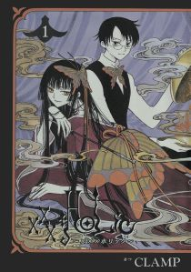
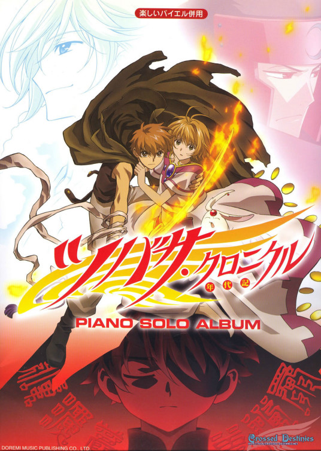

ELSE ANIME其他动画
 《XXX_HOLiC》 |
四月一日君寻进入了别名为次元魔女并自称为壹原侑子所拥有的能够实现任何愿望的店。侑子说只要四月一日能付出对等的代价，就可以帮助他实现－“可以让你看不见妖怪，而且，让妖怪不受你的血所吸引”的愿望。因此四月一日答应侑子的条件，侑子便开出让四月一日在其店中打工作为代价，直到时数足以实现愿望。打工期间，四月一日遇到各式各样不可思议的事，与当中的人、妖怪、客人接触后，在心理上有很大的转变，特别是侑子的影响。 |
 《翼·年代记》 |
《翼·年代记》的故事中，首个世界是沙漠城市──玖楼国。少年小狼多年前，跟随养父考古家藤隆来到这国家，希望发掘该国的翼形遗迹，以解开玖楼国的历史之谜。小狼因此认识了玖楼国中的各人，包括与他青梅竹马的小樱公主。二人一直互相心仪，但小狼碍于身份问题，一直不敢表白。藤隆辞世后，小狼继承父亲遗志，继续挖掘和研究工作。可是，在一次小樱及其兄长桃矢国王的探访中，遗迹突然发生异动，小樱的记忆化作了羽毛，飞散消失。神官雪兔一面照顾受了伤的国王桃矢，一面告诉小狼：小樱的记忆羽毛已经飞散到不同的次元世界里，若要救回小樱，必须收集回小樱的羽毛。 |